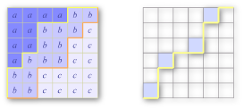

A counting problem, with a board size not too big. The problem gives a quick impression of dynamic programming on a space of exponentially many states. And it is indeed so.
By the limits of this problem, let us say the size is the larger of m and n. A solution with 22⋅size states is fine, while a solution with 24⋅size states is probably only good for the small dataset. However, for regular programming contest goers, there are many conventional ways to define the states for similar grid problems that fall into the latter category.
So, the key part of the problem is to find the right state space. Once it is found, the finalists can no doubt carry out the dynamic programming solution easily.
The basic picture is the lattice paths. Specifically, let us consider, in a doubly sorted grid, all the letters less than or equal to a particular character. They form an upwards closed region towards the top-left corner. In other words, if the letter in (r, c) is no greater than the prescribed character, so is the letter in (r', c'), if r' ≤ r and c' ≤ c. As a result, the boundary separating this region and the rest of the grid forms a lattice path from the bottom-left to the top-right, and can only go north or east. This is a well known subject -- there are (m+n choose m) such paths in total. Let us call them monotone paths. For two monotone paths, we say one dominates the other if one never goes above the other. Any doubly sorted grid corresponds in a one to one fashion to 26 monotone paths (some of which may be identical), one for each letter, and the path for a bigger letter dominates the paths for the smaller letters. The left picture below depicts the situation when there are three letters; and the monotone boundaries for 'a' and 'b' are highlighted.

Just one step further. Let us focus not only the exact boundary for a letter but any monotone path. For any monotone path P and any letter c, define
dp[P][c] := the number of ways one can fill all the squares above the path P, using only the letters no greater than c, so that the upper part is doubly sorted, and any pre-filled letter in the upper part is respected.
For any monotone path except the most dominated one, we have one or more maximal points, those are the points where the path goes east then followed by a step upwards. In the second picture above, we highlight a monotone path with its maximal points colored. To compute dp[P][c], we can divide the situation into two cases. (1) The letter c does not appear at all. There are dp[P][c-1] ways to do so. (2) Otherwise, c must appear in at least one of the maximal points of P. For each non-empty subset of the maximal points, we can assign the letter c to them, reducing our task to dp[P'][c], where P' is a path that only differs from P in that subset of maximal points. We use inclusion-exclusion formula on all the non-empty subsets to compute the contribution to dp[P][c] in this case.
Such a solution is relatively intuitive, and is fast enough under our constraints. By adding one more helper, one can find a faster solution. Now let us refine
dp[P][c][k] := the number of ways one can fill all the squares above the path P, using only the letters no greater than c, and the letter c does not occur anywhere after column k,so that the upper part is doubly sorted, and any pre-filled letter in the upper part is respected.We leave the implementation details as an easy exercise for interested readers. We mention that, when m=n, the number of states is 26⋅(2n choose n)⋅n = Θ(4nn0.5). Although the computation of a single dp[P][c][k] may involve up to n steps, the running time can be shown as Θ(4nn0.5) by a simple amortized analysis -- for fixed P and c, we need O(n) steps in total to compute the table for all k.